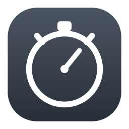

A free stopwatch, countdown and pomodoro timer that lives in your Mac's menu bar. No dock icon, no window, no account.
Click the icon and it counts up. Click again to pause. Finish saves the time to your history and resets.
Set a duration and choose what happens at zero — blink in the menu bar, an alert window, a notification, or a spoken announcement.
Work and break lengths over a set number of rounds, cycling automatically. A rule under the time means you're working; a rule above it means you're on a break.
Every session is listed with a marker showing which timer produced it, a running total, and a CSV export.
Apple charges developers $99 a year for a certificate that tells macOS an app is trustworthy. This is a free app given away for nothing, and there's no certificate behind it — so macOS treats it as suspicious and shows a scary, inaccurate message.
There is no way around this without paying Apple. Not a setting, not a different download link. Either you tell your Mac to open it anyway, or you build the app yourself from the source code.
You should be sceptical of any download that asks you to bypass a security warning. So don't take our word for it — the complete source code is public, every line of it, and you or anyone you trust can read exactly what it does before running it.
Paste this into Terminal once, then open the app normally:
xattr -dr com.apple.quarantine "/Applications/Cadence.app"
That clears the "downloaded from the internet" flag macOS attaches to the file. You only need to do it once.
If you'd rather not touch Terminal: open System Settings → Privacy & Security, scroll down, and click Open Anyway next to the message about Cadence.
If you'd rather not bypass anything, compile it from source. An app you built on your own machine carries no warning at all.
git clone https://github.com/Paul10142/cadence.git cd cadence ./Tools/bundle.sh
| Action | How |
|---|---|
| Start / pause the stopwatch | Click the menu bar icon |
| Open the menu | Right-click the icon |
| Start a countdown | Right-click → Start General Timer |
| Start a pomodoro | Right-click → Start Pomodoro Timer |
| See your history | Right-click → Show All Sessions |
| Change how it behaves | Right-click → Preferences |
Preferences lets you set system-wide keyboard shortcuts that work from any app, and choose what a plain click does — open the menu, or run any of the three timers.
Thyme by João Moreno was a lovely little menu bar stopwatch, last updated in 2015 and no longer able to run on Apple Silicon Macs. This is an independent rewrite in Swift, with a countdown and pomodoro timer added.